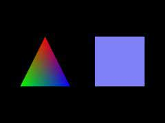

|
第03課 |
 |
|  |
添加顏色:
作為第二課的擴展，我將叫你如何使用顏色。你將理解兩種著色模式，在左圖中，三角形用的是光滑著色，四邊形用的是平面著色。 |
|
 |
|
上一課中我教給您三角形和四邊形的繪製方法。這一課我將教您給三角形和四邊形添加2種不同類型的著色方法。使用Flat
coloring(單調著色)給四邊形塗上固定的一種顏色。使用Smooth coloring(平滑著色)將三角形的三個頂點的不同顏色混合在一起，創建漂亮的色彩混合。
繼續在上節課的DrawGLScene例程上修改。下面將整個例程重寫了一遍。如果您計劃修改上節課的代碼，只需用下面的代碼覆蓋原來的DrawGLScene()就可以了。 |
|
int DrawGLScene(GLvoid) // 此過程中包括所有的繪製代碼
{
glClear(GL_COLOR_BUFFER_BIT | GL_DEPTH_BUFFER_BIT); // 清除屏幕及深度緩存
glLoadIdentity(); // 重置模型觀察矩陣
glTranslatef(-1.5f,0.0f,-6.0f); // 左移 1.5 單位，並移入屏幕 6.0
glBegin(GL_TRIANGLES); // 繪製三角形
|
如果您還記得上節課的內容，這段代碼在屏幕的左半部分繪製三角形。下一行代碼是我們第一次使用命令glColor3f(r,g,b)。括號中的三個參數依次是紅、綠、藍三色份量。取值範圍可以從0,0f到1.0f。類似於以前所講的清除屏幕背景命令。
我們將顏色設為紅色(純紅色，無綠色，無藍色)。接下來的一行代碼設置三角形的第一個頂點(三角形的上頂點)，並使用當前顏色(紅色)來繪製。從現在開始所有的繪製的對象的顏色都是紅色，直到我們將紅色改變成別的什麼顏色。 |
|
glColor3f(1.0f,0.0f,0.0f); // 設置當前色為紅色
glVertex3f( 0.0f, 1.0f, 0.0f); // 上頂點
|
第一個紅色頂點已經設置完畢。接下來我們設置第二個綠色頂點。三角形的左下頂點被設為綠色。 |
|
glColor3f(0.0f,1.0f,0.0f); // 設置當前色為綠色
glVertex3f(-1.0f,-1.0f, 0.0f); // 左下
|
現在設置第三個也就是最後一個頂點。開始繪製之前將顏色設為藍色。這將是三角形的右下頂點。glEnd()出現後，三角形將被填充。但是因為每個頂點有不同的顏色，因此看起來顏色從每個角噴出，並剛好在三角形的中心匯合，三種顏色相互混合。這就是平滑著色。 |
|
glColor3f(0.0f,0.0f,1.0f); // 設置當前色為藍色
glVertex3f( 1.0f,-1.0f, 0.0f); // 右下
glEnd(); // 三角形繪製結束
glTranslatef(3.0f,0.0f,0.0f); // 右移3單位
|
現在我們繪製一個單調著色－藍色的正方形。最重要的是要記住，設置當前色之後繪製的所有東東都是當前色的。以後您所創建的每個工程都要使用顏色。即便是在完全採用紋理貼圖的時候，glColor3f仍舊可以用來調節紋理的色調。等等....,以後再說吧。
我們必須要做的事只需將顏色一次性的設為我們想採用的顏色(本例採用藍色)，然後繪製場景。每個頂點都是藍色的，因為我們沒有告訴OpenGL要改變頂點的顏色。最後的結果是.....全藍色的正方形。再說一遍，順時針繪製的正方形意味著我們所看見的是四邊形的背面。 |
|
glColor3f(0.5f,0.5f,1.0f); // 一次性將當前色設置為藍色
glBegin(GL_QUADS); // 繪製正方形
glVertex3f(-1.0f, 1.0f, 0.0f); // 左上
glVertex3f( 1.0f, 1.0f, 0.0f); // 右上
glVertex3f( 1.0f,-1.0f, 0.0f); // 左下
glVertex3f(-1.0f,-1.0f, 0.0f); // 右下
glEnd(); // 正方形繪製結束
return TRUE; // 繼續運行
}
|
最後換掉窗口模式下的標題內容 |
|
// 重建 OpenGL 窗口
if (!CreateGLWindow("NeHe's顏色實例",640,480,16,fullscreen))
|
在這一課中，我試著盡量詳細的解釋如何為您的OpenGL多邊形添加單調和平滑的著色效果的步驟。改改代碼中的紅綠藍份量值，看看最後y有什麼樣的結果。如果您有什麼意見或建議請給我EMAIL。如果您認為有什麼不對或可以改進，請告訴我。我想做最好的OpenGL教程並對您的反饋感興趣。
 |
版權與使用聲明:
我是個對學習和生活充滿激情的普通男孩,在網絡上我以DancingWind為暱稱，我的聯繫方式是zhouwei02@mails.tsinghua.edu.cn，如果你有任何問題，都可以聯繫我。
引子
網絡是一個共享的資源，但我在自己的學習生涯中浪費大量的時間去搜索可用的資料，在現實生活中花費了大量的金錢和時間在書店中尋找資料，於是我給自己起了個暱稱DancingWind，其意義是想風一樣從各個知識的站點中吸取成長的養料。在飄蕩了多年之後，我決定把自己收集的資料整理為一個統一的資源庫。
版權聲明
所有DancingWind發表的內容，大多都來自共享的資源，所以我沒有資格把它們據為己有，或聲稱自己為這些資源作出了一點貢獻。故任何人都可以複製，修改，重新發表，甚至以自己的名義發表，我都不會追究，但你在做以上事情的時候必須保證內容的完整性，給後來的人一個完整的教程。最後，任何人不能以這些資料的任何部分，謀取任何形式的報酬。
發展計劃
在國外，很多資料都是很多人花費幾年的時間慢慢積累起來的。如果任何人有興趣與別人共享你的知識，我很歡迎你與我聯繫，但你必須同意我上面的聲明。
感謝
感謝我的母親一直以來對我的支持和在生活上的照顧。
感謝我深愛的女友田芹，一直以來默默的在精神上和生活中對我的支持，她甚至把買衣服的錢都用來給我買書了，她真的是我見過的最好的女孩，希望我能帶給她幸福。
資源下載:
文檔 網頁格式
PDF格式
源碼 RAR格式 |
|
|